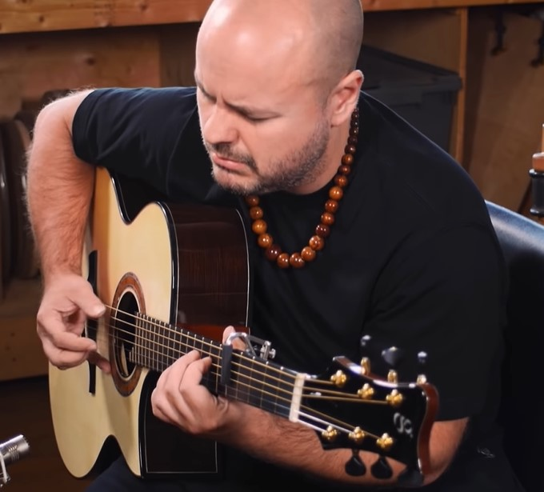
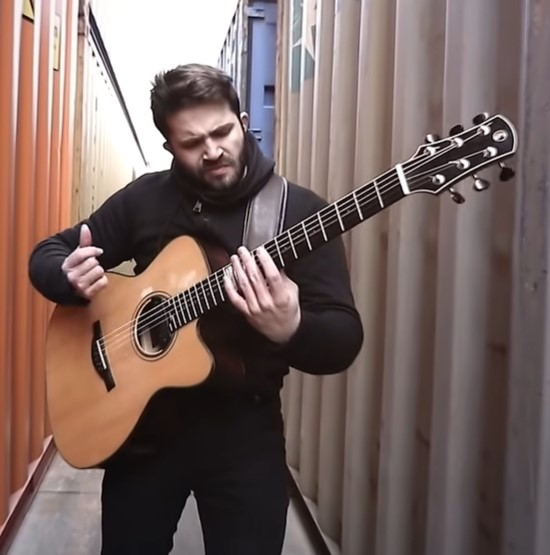

美式指彈
-

Andy Mckee
他擅用複雜的和弦概念、左右手技巧、敲擊技巧等，大膽融入他自己的一些標誌性動作在我們熟悉的旋律中，將翻彈原作變成獨一無二的原創作品。
以"Africa"為例，看著他設法平衡左手的開場solo與主旋律以及令人印象深刻的右手打擊技巧，絢麗的技巧幾乎讓你忘記這首歌其實原本是別人的作品！！ 另外一個例子是"Everybody Wants to Rule the World"，Andy Mckee 完全吉他變成了一人管弦樂隊。他何巧妙的使用大拇指製造 bass line，同時利用打擊技巧作為反拍。 -

Luca Stricagnoli
Luca Stricagnoli出生於義大利，是一位受過古典音樂訓練的音樂家，但這不意味他只會彈一些古典的樂曲。年僅23歲就簽約進 Candyrat 公司，他的作品涵蓋了充滿實驗性的編曲，也有巧妙編制的 cover 歌曲。
從許多像是CAN’T STOP（Red Hot Chili Peppers）、Hold The Line（TOTO）的翻彈樂曲中你會發現，Luca Stricagnoli 可以說達到了一人樂團的境界，他非常善於結合各種樂器或是特殊的演奏技法於作品之中，身兼主旋律，同時又是伴奏，並能在這些角色之中自在轉換。 -
Alexandr Misko
出生於俄羅斯的Alexandr Misko，彈奏吉他的經歷已有八年之久，其中有三年曾和專業教師學習古典吉他的技巧； 他曾透露，自己是一個懶惰的學生，在學習到所謂「指彈」技巧之後，他幾乎拋下課程上所學，一心一意尋找屬於自己的「指彈」方式。 八年的經歷底下，Alex已有多次演出經驗，他表示在每次表演當中，大多都是表演自己的創作曲，所以其實很難引起觀眾共鳴，也因此，他才決定彈奏一些經典流行歌，希望能先讓大家知道，有「一個人」很喜歡指彈！